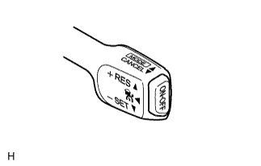
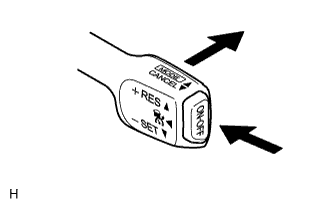
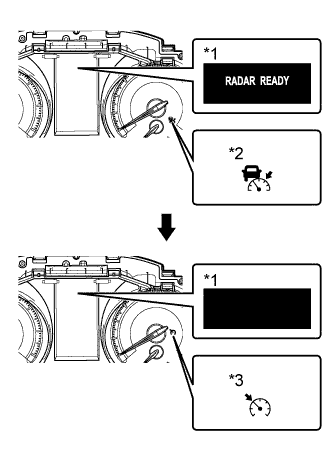

ДИНАМИЧЕСКАЯ РАДАРНАЯ СИСТЕМА КРУИЗ-КОНТРОЛЯ > ПРОВЕРКА РАБОТЫ СИСТЕМЫ |
| ПРОВЕРКА ВХОДНОГО СИГНАЛА |
|  |
Подсоедините портативный диагностический прибор к DLC3.
Проверьте работу выключателя круиз-контроля (в положениях ON-OFF, CANCEL, -SET, +RES и MODE) в режиме Data List портативного диагностического прибора.
| ПРОВЕРЬТЕ ПОЛОЖЕНИЕ MODE ВЫКЛЮЧАТЕЛЯ |
|  |
Установите замок зажигания в положение ON (ВКЛ).
Включите выключатель круиз-контроля.
|  |
Затем отожмите выключатель круиз-контроля в положение MODE, по крайней мере, на 1 с, чтобы переключиться в режим поддержания постоянной скорости. Убедитесь, что вместо сообщения "RADAR READY" (радарная система готова к работе) на мультиинформационном дисплее отображается черный экран.
Убедитесь, что контрольная лампа круиз-контроля (индикация режима контроля дистанции между автомобилями) погасла, а главная контрольная лампа круиз-контроля CRUISE (индикация режима поддержания постоянной скорости) горит.
| *1 | Мультиинформационный дисплей |
| *2 | Контрольная лампа круиз-контроля (индикация режима контроля дистанции между автомобилями) |
| *3 | Контрольная лампа круиз-контроля (индикация режима поддержания постоянной скорости) |
| ПРОВЕРЬТЕ ПЕРЕКЛЮЧАТЕЛИ НА РУЛЕВОМ КОЛЕСЕ |
Установите замок зажигания в положение ON (ВКЛ).
Включите выключатель круиз-контроля. Убедитесь, что на мультиинформационном дисплее отображается сообщение "RADAR READY" (радарная система готова к работе), и контрольная лампа круиз-контроля включена.
Нажмите на выключатель системы контроля дистанции на переключателе на рулевом колесе в сборе.
Убедитесь, что значение дистанции между автомобилями на мультиинформационном дисплее щитка приборов изменяется в следующем порядке: большая - средняя - малая.
| *1 | Переключатели на рулевом колесе в сборе (выключатель системы контроля дистанции) | *2 | Мультиинформационный дисплей |
| *3 | Большая | *4 | Средняя |
| *5 | Малая | - | - |